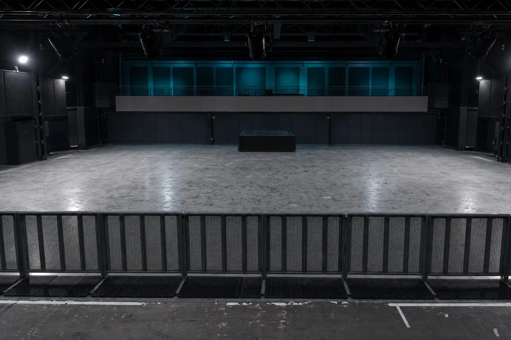
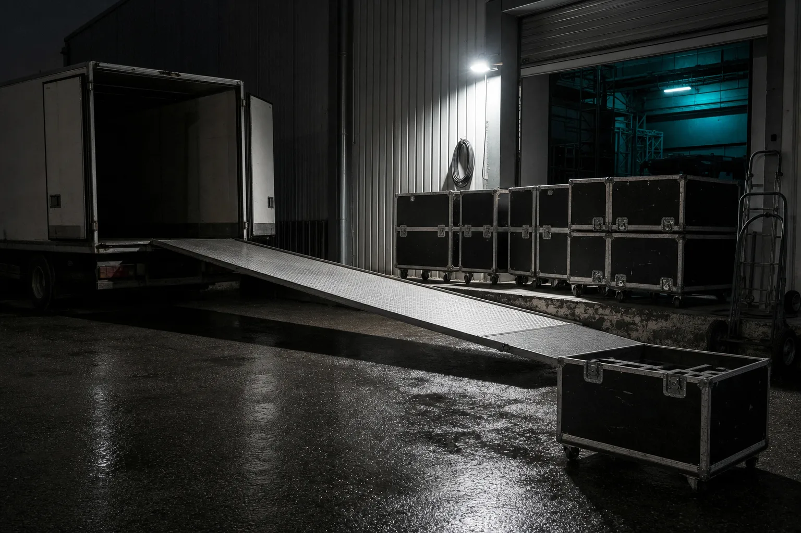

D-90
EL TÍO EVENTOS · HOLD
La base: saber quiénes son los que ya fueron, tener los datos en un solo lugar, y que te encuentren cuando alguien busca dónde tocar.
Cuestionario | 15-25 min | Llamada | 30 min | USD 50 | pago único

D-60
LA CARTELERA
Se implementa en cualquier caso, sea cual sea el problema que encuentre el Audit. Sin esto, cualquier automatización se monta sobre una fecha sin vender.
BASE · VA SIEMPRE
D-45
SALA VACÍA
Entramos por un problema concreto y revisamos toda la operación. Muchas veces lo que más deja no es lo que la productora vino a buscar, y decirlo es parte del trabajo.
LAS SIETE ÁREAS
D-30
LOS DOS NÚMEROS
En eventos, todo lo que pasa después de firmar es ejecución. Lo que decide si la fecha gana o pierde ya está decidido cuando se firmó: qué artista, qué día, qué sala, a qué cachet y con qué precio de entrada.
LO QUE SE MIRA
D-14
EL AVANCE
Miramos cómo funciona la productora hoy, área por área. No la impresión: los datos.
Se ordena el proceso antes de automatizarlo. Automatizar algo malo lo hace más rápido, no mejor.
Solo lo que tiene sentido en tu operación, no lo que está de moda.
Tu equipo queda sabiendo operarlo. Si no, en tres meses no lo usa nadie.

D-7
LA FRUTILLA
Ejemplos de lo que se puede implementar una vez que la base está. No son el plato principal y no se venden como tal. Lo que te toque sale del Audit.
OPCIONAL · SEGÚN EL AUDIT
D-0
PUERTAS
Un cuestionario guiado que se puede cortar y retomar, las siete áreas más lo propio del rubro, y un mapa de lo que conviene hacer ahora y después. Lo revisa una persona antes de que llegue.
Audit | USD 50 | Llamada | 30 min, incluida | Implementación | se define ahí
D+1
SETTLEMENT
ANTES DE EMPEZAR
Media hora de llamada y un mapa de tu operación por USD 50. Si el Audit no encuentra nada que valga la pena implementar, el mapa queda tuyo igual.